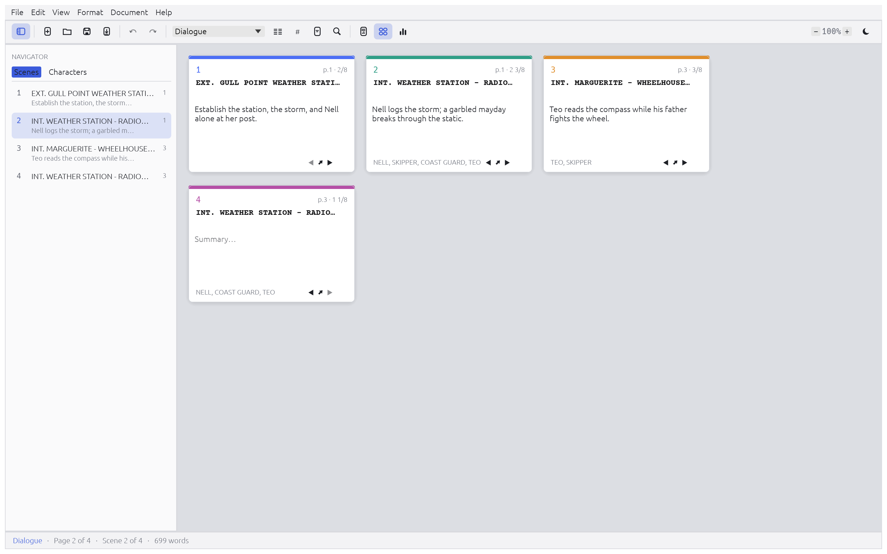
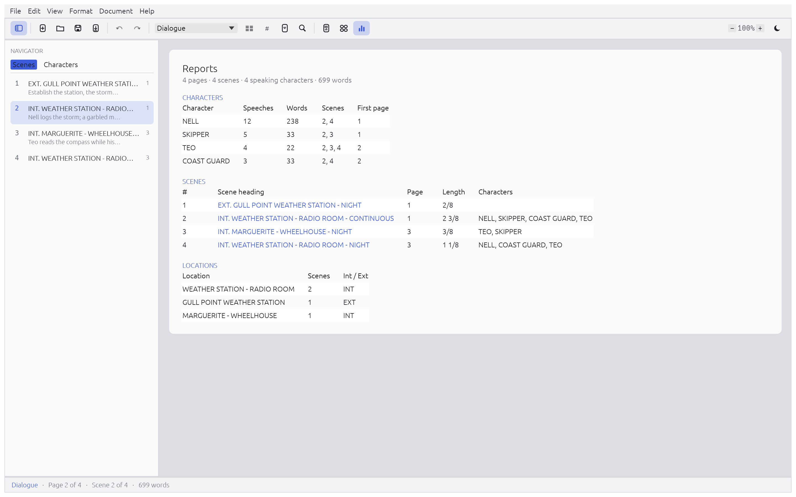

ScriptCraft v0.5.0 · MIT / Apache-2.0
ScriptCraft
A fast, local-first screenwriting application written in Rust. Native Final Draft (.fdx) and Fountain (.fountain) support, deterministic 12pt Courier Badi pagination with Latin & Cyrillic coverage, embedded-font PDF export, index cards, beat board, live collaboration, CLI, and MCP server.
Download v0.5.0
macOS (Universal)
Apple Silicon & Intel universal ScriptCraft.app bundle + scriptcraft-cli.
Windows (x64)
Standalone scriptcraft.exe desktop editor and scriptcraft-cli.exe.
Linux (x86_64)
Portable tarball and Debian/Ubuntu package with desktop integration.
Download .tar.gz → · .deb →Browser / WebAssembly
Run directly in your browser with local file open/save or self-host the static bundle.
Open Web App → · Download .zip →2-Minute Overview
A Tour of ScriptCraft





